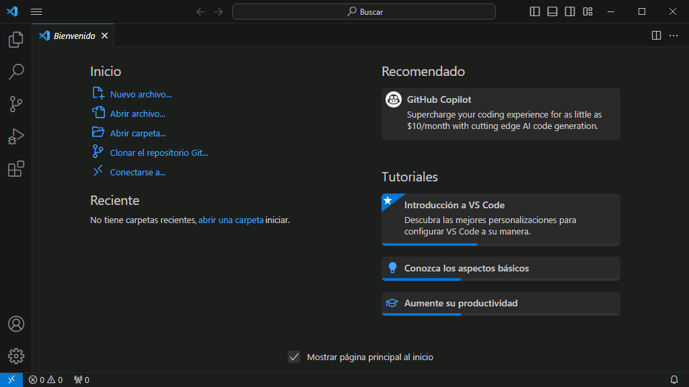
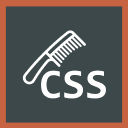

Esta es la configuración de Visual Studio Code que se recomienda para seguir este curso.
 La forma más sencilla de configurar Visual Studio Code de acuerdo con esta configuración recomendada es importar un perfil ya preparado, como se comenta en la lección Perfil recomendado.
La forma más sencilla de configurar Visual Studio Code de acuerdo con esta configuración recomendada es importar un perfil ya preparado, como se comenta en la lección Perfil recomendado.
Esta lección detalla la configuración recomendada, pero no detalla los pasos para realizar dicha configuración en Visual Studio Code. En caso necesario, puede consultar la lección Personalización de VSC de los apuntes de Informática general, en la que se explica detalladamente cómo se personaliza Visual Studio Code. En dichos apuntes también puede consultar lecciones dedicadas a Visual Studio Code, como Presentación general, Instalación, Uso y otras, que le pueden ser de ayuda si no conoce Visual Studio Code.
El tema de color es un aspecto muy personal por lo que se deja a elección del alumno el tema de color empleado.
En las capturas de los apuntes se empleará el Tema Dark Modern (Moderno oscuro).

En este curso Iniciación a la programación de páginas web en PHP de mclibre.org se utilizará una carpeta como área de trabajo de Visual Studio Code (no un Área de trabajo).
Este es el área de trabajo recomendada:


Para seguir este curso de Iniciación a la programación de páginas web en PHP de mclibre.org se aconseja instalar las extensiones mclibre.org Snippets, PHP CS Fixer, Hex Editor, Close HTML/XML tag, Image Preview, Tag Inserter mclibre fork, HTMLHint y CSScomb
 La forma más sencilla de instalar y configurar estas extensiones es importar un perfil ya preparado, como se comenta en la lección Perfil recomendado.
La forma más sencilla de instalar y configurar estas extensiones es importar un perfil ya preparado, como se comenta en la lección Perfil recomendado.

Autor: Bartolomé Sintes
Marketplace: mclibre Snippets
Repositorio GitHub: mclibre Snippets
Estos snippets permiten pegar código HTML en fragmentos PHP. Para ejecutarlos, se pueden utilizar estos enlaces de teclado:

Autor: junstyle
Marketplace: PHP CS Fixer
Repositorio GitHub: PHP CS Fixer
PHP Coding Standards Fixer (PHP CS-Fixer) es una herramienta creada por los autores del framework PHP Symfony. Esta extensión permite utilizarla en Visual Studio Code.
Una vez instalada, aplique la herramienta mediante el atajo de teclado habitual para formatear código Alt+Mayús+f.
Esta extensión requiere un fichero de configuración que debe crearse manualmente, como se explica en el apartado de preferencias de la extensión PHP CS Fixer.
PHP CS Fixer puede formatear también los fragmentos HTML que haya en ficheros .php (estableciendo la configuración "php-cs-fixer.formatHtml" con el valor true), pero el resultado no me termina de gustar y por eso no recomiendo activarlo. Con la configuración recomendada en este curso, únicamente se formateará el código PHP, no el HTML.

Autor: Microsoft
Marketplace: Hex Editor
Repositorio GitHub: mclibre Snippets
Esta extensión añade a VSCode un editor hexadecimal que permite ver todos los caracteres de un fichero.
En este curso, el editor hexadecimal sólo se utiliza para visualizar los caracteres de la marca de orden de bytes (BOM), que pueden afectar a la ejecución de algunos programas, como se comenta en la lección Cabeceras.
Autor: Compulim
Marketplace: Close HTML/XML tag
Repositorio GitHub: Close HTML/XML tag
Al pulsar el atajo de teclado Alt+., se añade automáticamente la etiqueta de cierre de la etiqueta abierta anterior.
Problemas detectados:

Autor: Kiss Tamás
Marketplace: Image preview
Repositorio GitHub: Image preview
En la lección Extensiones de Visual Studio Code para HTML/CSS de los apuntes de HTML/CSS se comenta con más detalle el uso de esta extensión
Al situar el cursor sobre la ruta de una imagen, se muestra un cuadro con una miniatura de la imagen y el tamaño de la imagen. Además, haciendo Ctrl+clic izquierdo se abre la imagen en otra pestaña.
Nota: En cursos anteriores recomendaba este extensión para ver el tamaño de las imágenes insertadas y poder rellenar los atributos width y height fácilmente. Pero en septiembre de 2019 añadí a la lista de atajos recomendados un atajo de teclado que permite crear de forma inmediata los atributos width y height. Sitúe el cursor en el interior de la etiqueta img y escriba el atajo ctrl+alt+e ctrl+alt+s y automáticamente se añadirán los atributos width y height con los valores de la imagen. La extensión Image Preview sigue siendo útil para ver una miniatura de la imagen, pero ya no es necesaria para indicar los tamaños.
Autor: Bartolomé Sintes
Marketplace: Tag Inserter mclibre fork
Repositorio GitHub: Tag Inserter mclibre fork
En la lección Extensiones de Visual Studio Code para HTML/CSS de los apuntes de HTML/CSS se comenta con más detalle el uso de esta extensión
Para añadir una etiqueta alrededor de un texto:
Esta extensión es un fork de la extensión Tag Inserter que permite insertar etiquetas en ficheros PHP (la extensión original no lo permite).
Autor: HTMLHint
Marketplace: HTMLHint
Repositorio GitHub: HTMLHint
La extensión HTMLHint permite que Visual Studio Code utilice el analizador de código estático HTMLHint.
El uso de esta extensión y el significado de sus opciones de configuración se comentan en la lección Validación de HTML y CSS en Visual Studio Code.
Actualmente (octubre de 2025), esta extensión no trabaja correctamente con ficheros .php. Con la configuración recomendada en este curso, esta extensión sólo trabajará con archivos .html, por lo que resultará de poca utilidad.

Autor: Denis Malinochkin
Marketplace: CSScomb
Repositorio GitHub: CSScomb
La extensión CSScomb permite que Visual Studio Code utilice el formateador de código CSS CSScomb.
Para que CSScomb formatee el código de la hoja de estilo, hay que pulsar la tecla F1 y escribir el comando csscomb. Se puede también crear un atajo de teclado para ejecutar la orden (en los atajos de teclado recomendados se define el atajo Alt+Mayús+c Alt+Mayús+f).
El estilo de formato concreto que aplica CSScomb se configura en el archivo de configuración de usuario o en el del área de trabajo mediante la configuración csscomb.preset.
Actualmente (octubre de 2025), esta extensión no trabaja con ficheros .php. Con la configuración recomendada en este curso, esta extensión sólo trabajará con archivos .css y con bloques <style> de archivos .html, por lo que resultará de poca utilidad.
Estas son las preferencias de configuración que se aconseja establecer para seguir el curso Iniciación a la programación de páginas web en PHP de mclibre.org.
 La forma más sencilla de establecer estas preferencias de configuración es importar un perfil ya preparado, como se comenta en la lección Perfil recomendado.
La forma más sencilla de establecer estas preferencias de configuración es importar un perfil ya preparado, como se comenta en la lección Perfil recomendado.
Estas son las preferencias recomendadas completas:
{
// Configuraciones de VSCode recomendadas para el curso
// Iniciación a la programación de páginas web en PHP
// https://www.mclibre.org/consultar/php/
//
// Versión 2025-10-12
//
//
// ATENCIÓN:
// * Se debe descomentar la línea 203 de este fichero settings.json
// que corresponde a la configuración php.validate.executablePath
//
//
// Configuraciones de VSCode recomendadas para el curso Páginas web HTML y hojas de estilo CSS de www.mclibre.org
//
// Editor: Insert Spaces
// Insertar espacios al presionar "TAB"
"editor.insertSpaces": true,
//
// Editor: Linked Editing
// Controla si el editor tiene habilitada la edición vinculada. Dependiendo del lenguaje, los símbolos relacionados (por ejemplo, las etiquetas HTML) se actualizan durante la edición.
"editor.linkedEditing": true,
//
// Editor: Minimap enabled
// Controla si se muestra el minimapa.
"editor.minimap.enabled": false,
//
// Editor: Render Whitespace
// Controla la forma en que el editor debe representar los caracteres de espacio en blanco.
"editor.renderWhitespace": "all",
//
// Editor: Word Wrap
// Controla cómo deben ajustarse las líneas.
"editor.wordWrap": "on",
//
// Files: eol
// Carácter predeterminado de final de línea.
"files.eol": "\n",
//
// Files: Trim Trailing Whitespace
// Si se habilita, se recortará el espacio final cuando se guarde un archivo.
"files.trimTrailingWhitespace": true,
//
// Git: Autofetch
// Si se habilita, se comprobarán automáticamente los commits del repositorio remoto.
"git.autofetch": true,
//
// HTML: Auto Closing Tags
// Habilita o deshabilita el cierre automático de las etiquetas HTML.
"html.autoClosingTags": false,
// HTML: Auto Create Quotes
// habilita o deshabilita la creación automática de comillas para la asignación de atributos HTML.
"html.autoCreateQuotes": false,
//
// HTML: Format: End With Newline
// Finalizar con una nueva línea.
"html.format.endWithNewline": true,
//
// HTML: Format Extra Liners
// Lista de etiquetas, separadas por comas, que deben tener una nueva línea adicional delante. null equivale a "head, body, /html".
"html.format.extraLiners": "body",
//
// HTML: Format Wrap Line Length
// Cantidad máxima de caracteres por línea (0 = deshabilitar).
"html.format.wrapLineLength": 0,
//
// HTML
// Establece los valores de configuración que se reemplazarán para el lenguaje HTML
"[html]": {
"editor.tabSize": 2,
},
//
// CSS
// Establece los valores de configuración que se reemplazarán para el lenguaje CSS
"[css]": {
"editor.tabSize": 4,
},
//
// Window: Command Center
// Muestra el iniciador de comandos junto con el título de la ventana. Esta configuración solo tiene efecto cuando Window: Custom Title Bar Visibility no se establece en never.
"window.commandCenter": false,
//
// Workbench > Layout Control: Enabled
// Controla si el control de diseño se muestra en la barra de título personalizada. Esta configuración solo tiene efecto cuando Window: Custom Title Bar Visibility no se establece en never.
"workbench.layoutControl.enabled": false,
//
//
// Configuraciones de extensiones de VSCode recomendadas para el curso Páginas web HTML y hojas de estilo CSS de www.mclibre.org
//
// Extensión Close HTML/XML tag
//
// CloseTag : Ignore Tags
// Específica las etiquetas que serán ignoradas y no serán cerradas.
"closeTag.ignoreTags": "html",
//
//
// Extensión HTMLHint
//
// HTMLHint: Options
// Opciones de configuración de HTMLHint
"htmlhint.options": {
// Doctype and head
"doctype-first": true, // La primera línea es el doctype
"doctype-html5": true, // El doctype es html
"html-lang-require": true, // La etiqueta html incluye el atributo lang
"meta-charset-require": true, // La etiqueta head incluye la etiqueta meta con atributo charset
"meta-viewport-require": true, // La etiqueta head incluye la etiqueta meta con atributo viewport
"title-require": true, // La etiqueta head incluye la etiqueta title
// Attributes
"attr-lowercase": // Los atributos están en minúsculas excepto los de la lista (que son atributos SVG)
[
"allowReorder", "attributeName", "attributeType", "autoReverse", "baseFrequency", "baseProfile", "calcMode", "clipPathUnits", "contentScriptType", "contentStyleType", "diffuseConstant", "edgeMode", "externalResourcesRequired", "filterRes", "filterUnits", "glyphRef", "gradientTransform", "gradientUnits", "kernelMatrix", "kernelUnitLength", "keyPoints", "keySplines", "keyTimes", "lengthAdjust", "limitingConeAngle", "markerHeight", "markerUnits", "markerWidth", "maskContentUnits", "maskUnits", "numOctaves", "pathLength", "patternContentUnits", "patternTransform", "patternUnits", "pointsAtX", "pointsAtY", "pointsAtZ", "preserveAlpha", "preserveAspectRatio", "primitiveUnits", "refX", "refY", "repeatCount", "repeatDur", "requiredExtensions", "requiredFeatures", "specularConstant", "specularExponent", "spreadMethod", "startOffset", "stdDeviation", "stitchTiles", "surfaceScale", "systemLanguage", "tableValues", "targetX", "targetY", "textLength", "viewBox", "viewTarget", "xChannelSelector", "yChannelSelector", "zoomAndPan"
],
"attr-no-duplication": true, // En una etiqueta no hay atributos repetidos
"attr-no-unnecessary-whitespace": true, // No hay espacios entre los atributos y sus valores
"attr-value-double-quotes": true, // Los valores de los atributos se escriben entre comillas dobles
"attr-value-no-duplication": true, // Los valores de los atributos no se repiten en un mismo atributo
"attr-whitespace": true, // Los valores de los atributos no contienen espacios ni al principio ni al final
"alt-require": true, // Las etiquetas img incluyen el atributo alt
// Tags
"button-type-require": true, // La etiqueta button incluye el atributo type con alguno de los valores "button", "submit" o "reset"
"empty-tag-not-self-closed": true, // Las etiquetas vacías no incluyen el cierre /
"form-method-require": true, // La etiqueta form incluye el atributo method con alguno de los valores "get", "post" o "dialog"
"src-not-empty": true, // Los atributos src (o href de link) no están vacíos
"tag-no-obsolete": true, // No hay etiquetas obsoletas.
"tag-pair": true, // Las etiquetas no vacías incluyen la etiqueta de cierre
"tagname-lowercase": // Las etiquetas están en minúsculas excepto las de la lista (que son etiquetas SVG)
[
"linearGradient"
],
"tagname-specialchars": true, // Los nombres de etiquetas solo contienen letras, números o los caracteres "-", ":" o "_"
// id
"id-class-ad-disabled": true, // Los atributos id o class no incluyen la palabra "ad" (que puede ser bloqueada por los bloqueadores de anuncios)
"id-unique": true, // Los valores de los atributos id no se repiten
// Formatting
"spec-char-escape": true, // Los caracteres especiales > < y & se escriben como entidades de carácter
},
//
//
// Extensión CSScomb
//
// CSScomb : Preset
// Opciones de configuración de CSScomb
"csscomb.preset": {
"always-semicolon": true, // Escribe punto y coma (;) tras las propiedades
"block-indent": " ", // Utiliza sangrado de cuatro espacios
"color-case": "lower", // Escribe los códigos de color en minúsculas
"color-shorthand": false, // Escribe los códigos de color hexadecimales con seis caracteres
"element-case": "lower", // Escribe los selectores en minúsculas
"eof-newline": true, // Escribe una línea en blanco al final del archivo
"leading-zero": true, // Escribe un cero antes de un punto decimal
"lines-between-rulesets": 1, // Escribe una línea entre sentencias consecutivas
"quotes": "double", // Escribe comillas dobles
"remove-empty-rulesets": false, // No elimina las sentencias sin propiedades
"sort-order-fallback": "abc", // Las propiedades no ordenadas se ordenan alfabéticamente
"sort-order": // Orden de las propiedades
[
// Reseteo
"all",
// Posicionamiento clásico
"position", "z-index", "top", "right", "bottom", "left",
// Visibilidad y flexbox
"display", "visibility", "float", "clear", "overflow", "overflow-x", "overflow-y", "clip", "zoom", "align-content", "align-items", "align-self", "flex", "flex-flow", "flex-basis", "flex-direction", "flex-grow", "flex-shrink", "flex-wrap", "justify-content", "order",
// Modelo de caja: tamaño
"box-sizing", "width", "min-width", "max-width", "height", "min-height", "max-height", "margin", "margin-top", "margin-right", "margin-bottom", "margin-left", "padding", "padding-top", "padding-right", "padding-bottom", "padding-left",
// Modelo de caja: borde, outline, fondos
"opacity", "border", "border-color", "border-width", "border-style", "border-top", "border-top-color", "border-top-width", "border-top-style", "border-right", "border-right-color", "border-right-width", "border-right-style", "border-bottom", "border-bottom-color", "border-bottom-width", "border-bottom-style", "border-left", "border-left-color", "border-left-width", "border-left-style", "border-radius", "border-top-left-radius", "border-top-right-radius", "border-bottom-right-radius", "border-bottom-left-radius", "border-image", "border-image-source", "border-image-slice", "border-image-width", "border-image-outset", "border-image-repeat", "outline", "outline-color", "outline-width", "outline-style", "outline-offset", "background", "background-color", "background-image", "background-repeat", "background-attachment", "background-position", "background-position-x", "background-position-y", "background-clip", "background-origin", "background-size", "box-decoration-break", "box-shadow", "text-shadow",
// Texto
"color", "cursor", "font", "font-family", "src", "font-size", "font-style", "font-variant", "font-weight", "letter-spacing", "line-height", "quotes", "resize", "text-align", "text-align-last", "text-decoration", "text-indent", "text-justify", "text-outline", "text-transform", "vertical-align", "white-space", "word-spacing",
// Tablas y listas
"table-layout", "empty-cells", "caption-side", "border-spacing", "border-collapse", "list-style", "list-style-position", "list-style-type", "list-style-image", "content", "counter-increment", "counter-reset",
// Animaciones y transformaciones
"animation", "animation-delay", "animation-direction", "animation-duration", "animation-iteration-count", "animation-name", "animation-play-state", "animation-timing-function", "transform", "transform-origin", "transition", "transition-delay", "transition-duration", "transition-property", "transition-timing-function",
],
"space-after-colon": 1, // Escribe un espacio en blanco después de los dos puntos (:)
"space-after-combinator": " ", // Escribe un espacio en blanco después de un combinador de selectores
"space-after-opening-brace": "\n", // Escribe un salto de línea después de la llave de apertura ({)
"space-after-selector-delimiter": " ", // Escribe un espacio en blanco después de las comas (,) en los selectores
"space-before-closing-brace": "\n", // Escribe un salto de línea después de la llave de cierre (})
"space-before-colon": 0, // No escribe espacios en blanco antes de una coma (,)
"space-before-combinator": " ", // Escribe un espacio en blanco antes de un combinador de selectores
"space-before-opening-brace": " ", // Escribe un espacio en blanco entre el selector y la llave de apertura ({)
"space-before-selector-delimiter": "", // No escribe espacios en blanco después de las comas (,) en los selectores
"space-between-declarations": "\n", // Escribe un salto de línea entre propiedades
"strip-spaces": true, // No escribe espacios en blanco al final de las líneas
"tab-size": 4, // Escribe cuatro espacios en blanco en vez de un tabulador
"unitless-zero": true, // No escribe unidades en los valores nulos (0)
"vendor-prefix-align": true, // Alinea las propiedades específicas de cada navegador para facilitar la lectura
},
//
//
// Configuraciones de VSCode recomendadas para el curso Programación web en PHP de www.mclibre.org
//
// PHP
// Establece los valores de configuración que se reemplazarán para el lenguaje PHP
"[php]": {
"editor.tabSize": 4,
"editor.defaultFormatter": "junstyle.php-cs-fixer",
},
//
// PHP: Validate: Executable path
// Ubicación del intérprete de PHP.
// "php.validate.executablePath": "C:/xampp/php/php.exe",
//
// PHP: Validate: Run
// Indica la validación se ejecuta al guardar o al escribir.
"php.validate.run": "onType",
//
//
// Configuraciones de extensiones de VSCode recomendadas para el curso Programación web en PHP de www.mclibre.org
//
// Extensión PHP CS Fixer
//
// Ubicación del ejecutable de php-cs-fixer
"php-cs-fixer.executablePath": "${extensionPath}/php-cs-fixer.phar",
"php-cs-fixer.executablePathWindows": "${extensionPath}/php-cs-fixer.phar",
// Configuraciones de php-cs-fixer
"php-cs-fixer.onsave": false,
"php-cs-fixer.config": "php-cs-fixer-config.php",
"php-cs-fixer.allowRisky": false,
"php-cs-fixer.pathMode": "override",
"php-cs-fixer.exclude": [],
"php-cs-fixer.autoFixByBracket": true,
"php-cs-fixer.autoFixBySemicolon": false,
"php-cs-fixer.formatHtml": false,
"php-cs-fixer.documentFormattingProvider": true,
"php-cs-fixer.lastDownload": 1760167353665,
//
//
}
Estas preferencias se pueden dividir en:
// Configuraciones de VSCode recomendadas para el curso Páginas web HTML y hojas de estilo CSS de www.mclibre.org
//
// Editor: Insert Spaces
// Insertar espacios al presionar "TAB"
"editor.insertSpaces": true,
//
// Editor: Linked Editing
// Controla si el editor tiene habilitada la edición vinculada. Dependiendo del lenguaje, los símbolos relacionados (por ejemplo, las etiquetas HTML) se actualizan durante la edición.
"editor.linkedEditing": true,
//
// Editor: Minimap enabled
// Controla si se muestra el minimapa.
"editor.minimap.enabled": false,
//
// Editor: Render Whitespace
// Controla la forma en que el editor debe representar los caracteres de espacio en blanco.
"editor.renderWhitespace": "all",
//
// Editor: Word Wrap
// Controla cómo deben ajustarse las líneas.
"editor.wordWrap": "on",
//
// Files: eol
// Carácter predeterminado de final de línea.
"files.eol": "\n",
//
// Files: Trim Trailing Whitespace
// Si se habilita, se recortará el espacio final cuando se guarde un archivo.
"files.trimTrailingWhitespace": true,
//
// Git: Autofetch
// Si se habilita, se comprobarán automáticamente los commits del repositorio remoto.
"git.autofetch": true,
//
// HTML: Auto Closing Tags
// Habilita o deshabilita el cierre automático de las etiquetas HTML.
"html.autoClosingTags": false,
// HTML: Auto Create Quotes
// habilita o deshabilita la creación automática de comillas para la asignación de atributos HTML.
"html.autoCreateQuotes": false,
//
// HTML: Format: End With Newline
// Finalizar con una nueva línea.
"html.format.endWithNewline": true,
//
// HTML: Format Extra Liners
// Lista de etiquetas, separadas por comas, que deben tener una nueva línea adicional delante. null equivale a "head, body, /html".
"html.format.extraLiners": "body",
//
// HTML: Format Wrap Line Length
// Cantidad máxima de caracteres por línea (0 = deshabilitar).
"html.format.wrapLineLength": 0,
//
// HTML
// Establece los valores de configuración que se reemplazarán para el lenguaje HTML
"[html]": {
"editor.tabSize": 2,
},
//
// CSS
// Establece los valores de configuración que se reemplazarán para el lenguaje CSS
"[css]": {
"editor.tabSize": 4,
},
//
// Window: Command Center
// Muestra el iniciador de comandos junto con el título de la ventana. Esta configuración solo tiene efecto cuando Window: Custom Title Bar Visibility no se establece en never.
"window.commandCenter": false,
//
// Workbench > Layout Control: Enabled
// Controla si el control de diseño se muestra en la barra de título personalizada. Esta configuración solo tiene efecto cuando Window: Custom Title Bar Visibility no se establece en never.
"workbench.layoutControl.enabled": false,
//
Es conveniente sangrar adecuadamente los documentos para facilitar su lectura. Para sangrar un documento, se han utilizado siempre los tabuladores. Pero en los editores modernos no es necesario utilizar tabuladores porque los editores saben gestionar los espacios, de manera que cuando se pulsa la tecla tabulador el editor añade los espacios necesarios.
Esta preferencia hace que al cambiar una etiqueta HTML (de apertura o de cierre) VSC cambie la etiqueta emparejada (de cierre o de apertura).
Esta preferencia hace que VSC oculte el minimapa.
Esta preferencia hace que VSC muestre un punto en cada espacio en blanco. Es una ayuda visual para poder contar fácilmente el número de espacios en blanco.
Esta preferencia hace que VSC aproveche todo el ancho de pantalla para mostrar los documentos y no añada saltos de línea al formatear el documento.
Esta preferencia fuerza a VSC a utilizar el carácter LF para los saltos de líneas (habitual en GNU/Linux) y no los caracteres habituales en Windows (CR LF). Esta es la configuración más extendida en el ámbito del desarrollo web.
Si se abren los documentos que utilizan el carácter LF para los saltos de línea con un programa que no entienda correctamente ese carácter, el contenido se verá todo seguido, sin saltos de línea. El Bloc de notas de Windows 7 es uno de estos programas, por lo que no se recomienda editar los documentos creados en este curso con el Bloc de notas de Windows 7.
Esta preferencia hace que, al guardar un archivo, VSC borre los espacios en blanco situados al final de las líneas. Esos espacios son innecesarios y lo único que hacen es ocupar espacio.
A veces, parece que Visual Studio Code ha bloqueado los archivos (por ejemplo, si se intenta sustituir una imagen por otra). No pasa siempre, pero parece que está relacionado con una preferencia de git, que está comprobando si hay cambios y bloquea temporalmente los archivos.
Cuando se crea una página web desde cero, resulta conveniente que el editor cierre automáticamente las etiquetas, para no olvidarse de hacerlo. Al escribir una etiqueta, Visual Studio Code añade automáticamente la etiqueta de cierre después del cursor, de manera que lo que se escribe a continuación queda encerrado en el interior de la etiqueta.
Pero para hacer los ejercicios propuestos en este curso el cierre automático complica la realización de los ejercicios. En los ejercicios se proporciona siempre el texto de la página web, para ahorrar al alumno el trabajo de copiarlo. Hacer un ejercicio es añadir las etiquetas de apertura al principio de los fragmentos de texto y etiquetas de cierre al final. En esta situación, el cierre automático de las etiquetas es un inconveniente, ya que el cierre se crea al principio del fragmento de texto, no al final.
Por ello, para hacer los ejercicios de este curso, en vez del cierre automático se propone la extensión Close HTML/XML tag que, mediante el atajo de teclado Alt+., cierra la última etiqueta abierta.
VSCode añade automáticamente unas comillas cuando escribimos unas comillas para dar valor a un atributo de una etiqueta (es decir, cierra las comillas cuando las abrimos). Esta preferencia controla la posición del cursor. Si esta preferencia tiene el valor true, el cursor se coloca tras la comilla de cierre. Si esta preferencia tiene el valor false, el cursor se coloca entre las comillas.
Para hacer los ejercicios de este curso, en el que normalmente se querrá dar un valor al atributo, creo que resulta más cómodo que el cursor se coloque entre las comillas. En cualquier caso, aunque VSCode haya añadido las comillas de cierre, si tras escribir el valor del atributo escribimos unas comillas, VSCode "comprende" que no es que queramos añadir comillas y desplaza el cursor después de las comillas que ya existían.
Esta preferencia hace que, al formatear automáticamente un documento (mediante el atajo de teclado Alt+Shift+f), VSC compruebe que el último carácter de un documento sea un único salto de línea (LF). Si se trata de documentos independientes (como una página web) no es algo imprescindible, pero si se trata de documentos que se pueden cargar uno detrás de otro para crear un único documento (como un programa PHP), resulta conveniente para evitar que la última línea de un documento se una a la primera del documento siguiente.
Las normas POSIX especifican que en los ficheros de texto, todas las líneas deben terminar con el carácter salto de línea.
Esta preferencia hace que, al formatear automáticamente un documento (mediante el atajo de teclado Alt+Shift+f), VSC compruebe que delante de determinadas etiquetas haya al menos una línea en blanco. Yo tengo las costumbre de dejar siempre una línea en blanco delante de <body>, pero no delante de <head> ni de </html>.
Esta preferencia hace que, al formatear automáticamente un documento (mediante el atajo de teclado Alt+Shift+f), VSC compruebe que ninguna línea exceda el número de caracteres indicado y añada saltos de línea cuando sea necesario. Yo tengo la costumbre de mantener los párrafos de texto en una sola línea, aunque sea muy larga, para que al modificar el texto no se queden unas líneas más largas que otras. Para ello, esta preferencia tiene que tener el valor 0.
Referencia: Novedades VSC 1.0: Formateador HTML
Como en una página web suele haber bastante anidamiento, en los ficheros .html se recomienda un sangrado de sólo 2 espacios. Pero una hoja de estilo no suele haber más que uno o dos niveles de anidamiento, por lo que el sangrado puede ser de 4 espacios.
Muestra el iniciador de comandos junto con el título de la ventana
Muestra el control de diseño en la barra de título personalizada.
// Extensión Close HTML/XML tag
//
// CloseTag : Ignore Tags
// Específica las etiquetas que serán ignoradas y no serán cerradas.
"closeTag.ignoreTags": "html",
//
Las etiquetas vacías de html (br, col, hr, img, input, link, meta, etc.) no deben cerrarse.
// Extensión HTMLHint
//
// HTMLHint: Options
// Opciones de configuración de HTMLHint
"htmlhint.options": {
// Doctype and head
"doctype-first": true, // La primera línea es el doctype
"doctype-html5": true, // El doctype es html
"html-lang-require": true, // La etiqueta html incluye el atributo lang
"meta-charset-require": true, // La etiqueta head incluye la etiqueta meta con atributo charset
"meta-viewport-require": true, // La etiqueta head incluye la etiqueta meta con atributo viewport
"title-require": true, // La etiqueta head incluye la etiqueta title
// Attributes
"attr-lowercase": // Los atributos están en minúsculas excepto los de la lista (que son atributos SVG)
[
"allowReorder", "attributeName", "attributeType", "autoReverse", "baseFrequency", "baseProfile", "calcMode", "clipPathUnits", "contentScriptType", "contentStyleType", "diffuseConstant", "edgeMode", "externalResourcesRequired", "filterRes", "filterUnits", "glyphRef", "gradientTransform", "gradientUnits", "kernelMatrix", "kernelUnitLength", "keyPoints", "keySplines", "keyTimes", "lengthAdjust", "limitingConeAngle", "markerHeight", "markerUnits", "markerWidth", "maskContentUnits", "maskUnits", "numOctaves", "pathLength", "patternContentUnits", "patternTransform", "patternUnits", "pointsAtX", "pointsAtY", "pointsAtZ", "preserveAlpha", "preserveAspectRatio", "primitiveUnits", "refX", "refY", "repeatCount", "repeatDur", "requiredExtensions", "requiredFeatures", "specularConstant", "specularExponent", "spreadMethod", "startOffset", "stdDeviation", "stitchTiles", "surfaceScale", "systemLanguage", "tableValues", "targetX", "targetY", "textLength", "viewBox", "viewTarget", "xChannelSelector", "yChannelSelector", "zoomAndPan"
],
"attr-no-duplication": true, // En una etiqueta no hay atributos repetidos
"attr-no-unnecessary-whitespace": true, // No hay espacios entre los atributos y sus valores
"attr-value-double-quotes": true, // Los valores de los atributos se escriben entre comillas dobles
"attr-value-no-duplication": true, // Los valores de los atributos no se repiten en un mismo atributo
"attr-whitespace": true, // Los valores de los atributos no contienen espacios ni al principio ni al final
"alt-require": true, // Las etiquetas img incluyen el atributo alt
// Tags
"button-type-require": true, // La etiqueta button incluye el atributo type con alguno de los valores "button", "submit" o "reset"
"empty-tag-not-self-closed": true, // Las etiquetas vacías no incluyen el cierre /
"form-method-require": true, // La etiqueta form incluye el atributo method con alguno de los valores "get", "post" o "dialog"
"src-not-empty": true, // Los atributos src (o href de link) no están vacíos
"tag-no-obsolete": true, // No hay etiquetas obsoletas.
"tag-pair": true, // Las etiquetas no vacías incluyen la etiqueta de cierre
"tagname-lowercase": // Las etiquetas están en minúsculas excepto las de la lista (que son etiquetas SVG)
[
"linearGradient"
],
"tagname-specialchars": true, // Los nombres de etiquetas solo contienen letras, números o los caracteres "-", ":" o "_"
// id
"id-class-ad-disabled": true, // Los atributos id o class no incluyen la palabra "ad" (que puede ser bloqueada por los bloqueadores de anuncios)
"id-unique": true, // Los valores de los atributos id no se repiten
// Formatting
"spec-char-escape": true, // Los caracteres especiales > < y & se escriben como entidades de carácter
},
//
La explicación de las preferencias relacionadas con la extensión HTMLHint se pueden consultar en la lección Validación de HTML y CSS en VSCode de los apuntes de HTML/CSS.
// Extensión CSScomb
//
// CSScomb : Preset
// Opciones de configuración de CSScomb
"csscomb.preset": {
"always-semicolon": true, // Escribe punto y coma (;) tras las propiedades
"block-indent": " ", // Utiliza sangrado de cuatro espacios
"color-case": "lower", // Escribe los códigos de color en minúsculas
"color-shorthand": false, // Escribe los códigos de color hexadecimales con seis caracteres
"element-case": "lower", // Escribe los selectores en minúsculas
"eof-newline": true, // Escribe una línea en blanco al final del archivo
"leading-zero": true, // Escribe un cero antes de un punto decimal
"lines-between-rulesets": 1, // Escribe una línea entre sentencias consecutivas
"quotes": "double", // Escribe comillas dobles
"remove-empty-rulesets": false, // No elimina las sentencias sin propiedades
"sort-order-fallback": "abc", // Las propiedades no ordenadas se ordenan alfabéticamente
"sort-order": // Orden de las propiedades
[
// Reseteo
"all",
// Posicionamiento clásico
"position", "z-index", "top", "right", "bottom", "left",
// Visibilidad y flexbox
"display", "visibility", "float", "clear", "overflow", "overflow-x", "overflow-y", "clip", "zoom", "align-content", "align-items", "align-self", "flex", "flex-flow", "flex-basis", "flex-direction", "flex-grow", "flex-shrink", "flex-wrap", "justify-content", "order",
// Modelo de caja: tamaño
"box-sizing", "width", "min-width", "max-width", "height", "min-height", "max-height", "margin", "margin-top", "margin-right", "margin-bottom", "margin-left", "padding", "padding-top", "padding-right", "padding-bottom", "padding-left",
// Modelo de caja: borde, outline, fondos
"opacity", "border", "border-color", "border-width", "border-style", "border-top", "border-top-color", "border-top-width", "border-top-style", "border-right", "border-right-color", "border-right-width", "border-right-style", "border-bottom", "border-bottom-color", "border-bottom-width", "border-bottom-style", "border-left", "border-left-color", "border-left-width", "border-left-style", "border-radius", "border-top-left-radius", "border-top-right-radius", "border-bottom-right-radius", "border-bottom-left-radius", "border-image", "border-image-source", "border-image-slice", "border-image-width", "border-image-outset", "border-image-repeat", "outline", "outline-color", "outline-width", "outline-style", "outline-offset", "background", "background-color", "background-image", "background-repeat", "background-attachment", "background-position", "background-position-x", "background-position-y", "background-clip", "background-origin", "background-size", "box-decoration-break", "box-shadow", "text-shadow",
// Texto
"color", "cursor", "font", "font-family", "src", "font-size", "font-style", "font-variant", "font-weight", "letter-spacing", "line-height", "quotes", "resize", "text-align", "text-align-last", "text-decoration", "text-indent", "text-justify", "text-outline", "text-transform", "vertical-align", "white-space", "word-spacing",
// Tablas y listas
"table-layout", "empty-cells", "caption-side", "border-spacing", "border-collapse", "list-style", "list-style-position", "list-style-type", "list-style-image", "content", "counter-increment", "counter-reset",
// Animaciones y transformaciones
"animation", "animation-delay", "animation-direction", "animation-duration", "animation-iteration-count", "animation-name", "animation-play-state", "animation-timing-function", "transform", "transform-origin", "transition", "transition-delay", "transition-duration", "transition-property", "transition-timing-function",
],
"space-after-colon": 1, // Escribe un espacio en blanco después de los dos puntos (:)
"space-after-combinator": " ", // Escribe un espacio en blanco después de un combinador de selectores
"space-after-opening-brace": "\n", // Escribe un salto de línea después de la llave de apertura ({)
"space-after-selector-delimiter": " ", // Escribe un espacio en blanco después de las comas (,) en los selectores
"space-before-closing-brace": "\n", // Escribe un salto de línea después de la llave de cierre (})
"space-before-colon": 0, // No escribe espacios en blanco antes de una coma (,)
"space-before-combinator": " ", // Escribe un espacio en blanco antes de un combinador de selectores
"space-before-opening-brace": " ", // Escribe un espacio en blanco entre el selector y la llave de apertura ({)
"space-before-selector-delimiter": "", // No escribe espacios en blanco después de las comas (,) en los selectores
"space-between-declarations": "\n", // Escribe un salto de línea entre propiedades
"strip-spaces": true, // No escribe espacios en blanco al final de las líneas
"tab-size": 4, // Escribe cuatro espacios en blanco en vez de un tabulador
"unitless-zero": true, // No escribe unidades en los valores nulos (0)
"vendor-prefix-align": true, // Alinea las propiedades específicas de cada navegador para facilitar la lectura
},
//
Tenga en cuenta que es necesario descomentar (y en caso necesario, modificar) la preferencia resaltada del ejemplo siguiente:
// PHP
// Establece los valores de configuración que se reemplazarán para el lenguaje PHP
"[php]": {
"editor.tabSize": 4,
"editor.defaultFormatter": "junstyle.php-cs-fixer",
},
//
// PHP: Validate: Executable path
// Ubicación del intérprete de PHP.
// "php.validate.executablePath": "C:/xampp/php/php.exe",
//
// PHP: Validate: Run
// Indica la validación se ejecuta al guardar o al escribir.
"php.validate.run": "onType",
//
//
// Extensión PHP CS Fixer
//
// Ubicación del ejecutable de php-cs-fixer
"php-cs-fixer.executablePath": "${extensionPath}/php-cs-fixer.phar",
"php-cs-fixer.executablePathWindows": "${extensionPath}/php-cs-fixer.phar",
// Configuraciones de php-cs-fixer
"php-cs-fixer.onsave": false,
"php-cs-fixer.config": "php-cs-fixer-config.php",
"php-cs-fixer.allowRisky": false,
"php-cs-fixer.pathMode": "override",
"php-cs-fixer.exclude": [],
"php-cs-fixer.autoFixByBracket": true,
"php-cs-fixer.autoFixBySemicolon": false,
"php-cs-fixer.formatHtml": false,
"php-cs-fixer.documentFormattingProvider": true,
"php-cs-fixer.lastDownload": 1760167353665,
//
Cree un fichero php-cs-fixer-config.php en la carpeta .vscode y copie en él la configuración recomendada para PHP CS Fixer que se muestra a continuación. Tenga en cuenta que el nombre del fichero se establece con la opción de configuración "php-cs-fixer.config" y el archivo de configuración puede estar fuera de la carpeta .vscode.
Las reglas disponibles en PHP CS Fixer se pueden consultar de forma individual en la documentación de PHP CS Fixer.
<?php
// Apuntes del curso Programación web en PHP
// https://www.mclibre.org/consultar/php/
//
// Archivo de configuración para PHP CS Fixer
// 2025-10-12
return (new PhpCsFixer\Config())
->setRules([
'@PER-CS' => true,
'align_multiline_comment' => ['comment_type' => 'all_multiline'],
'binary_operator_spaces' => ['default' => 'single_space', 'operators' => ['=' => 'align_single_space_minimal'], ],
'combine_consecutive_issets' => true,
'explicit_indirect_variable' => true,
'include' => true,
'linebreak_after_opening_tag' => true,
'list_syntax' => ['syntax' => 'short'],
'magic_constant_casing' => true,
'magic_method_casing' => true,
'multiline_comment_opening_closing' => true,
'multiline_whitespace_before_semicolons' => true,
'native_function_casing' => true,
'native_type_declaration_casing' => true,
'no_alias_language_construct_call' => true,
'no_alternative_syntax' => true,
'no_empty_statement' => true,
'no_extra_blank_lines' => true,
'no_mixed_echo_print' => ['use' => 'print'],
'no_multiline_whitespace_around_double_arrow' => true,
'no_short_bool_cast' => true,
'no_singleline_whitespace_before_semicolons' => true,
'no_spaces_around_offset' => true,
'no_superfluous_elseif' => false,
'no_unneeded_braces' => true,
'no_unneeded_control_parentheses' => true,
'no_unset_cast' => true,
'no_unused_imports' => true,
'no_useless_concat_operator' => true,
'no_useless_else' => false,
'no_useless_return' => true,
'no_whitespace_before_comma_in_array' => true,
'normalize_index_brace' => true,
'object_operator_without_whitespace' => true,
'semicolon_after_instruction' => true,
'single_line_comment_style' => true,
'space_after_semicolon' => true,
'standardize_not_equals' => true,
'statement_indentation' => ['stick_comment_to_next_continuous_control_statement' => true],
'ternary_to_null_coalescing' => true,
'trailing_comma_in_multiline' => true,
'trim_array_spaces' => true,
'type_declaration_spaces' => true,
'unary_operator_spaces' => true,
'whitespace_after_comma_in_array' => true,
])
->setIndent(" ")
->setLineEnding("\n");
La explicación de las preferencias relacionadas con la extensión PHP CS Fixer se pueden consultar en la lección Configuración recomendada para PHP CS Fixer.
Estas son las tareas que se aconseja crear para seguir el curso Iniciación a la programación de páginas web en PHP de mclibre.org.
 La forma más sencilla de establecer estas tareas es importar un perfil ya preparado, como se comenta en la lección Perfil recomendado.
La forma más sencilla de establecer estas tareas es importar un perfil ya preparado, como se comenta en la lección Perfil recomendado.
Una vez definidas las tareas, se recomienda definir los atajos de teclado que ejecuten estas tareas, tal y como se comenta en el apartado sobre Atajos de teclado recomendados.
{
// Tareas de VSCode recomendadas para el curso Programación web en PHP de www.mclibre.org
//
"version": "2.0.0",
"tasks": [
{
"label": "Abrir en localhost (Firefox)",
"command": "explorer",
"windows": {
"command": "C:/Program Files/Mozilla Firefox/firefox.exe"
},
"linux": {
"command": "firefox"
},
"args": [
"localhost/iaw/php/${relativeFile}"
],
"presentation": {
"reveal": "never"
},
"problemMatcher": []
},
{
"label": "Abrir en localhost (Chrome)",
"command": "explorer",
"windows": {
"command": "C:/Program Files/Google/Chrome/Application/chrome.exe"
},
"linux": {
"command": "google-chrome"
},
"args": [
"localhost/iaw/php/${relativeFile}"
],
"presentation": {
"reveal": "never"
},
"problemMatcher": []
}
//
]
}
Las tareas recomendadas permiten abrir en los navegadores Firefox y Chrome las páginas que se están editando en Visual Studio Code, pero no como ficheros sino a través del servidor web.
Tenga en cuenta que para que las páginas se muestren en el navegador es necesario crear un alias en Apache, como se comenta en la lección Configuración de Apache y PHP.
Compruebe los campos enmarcados de las tareas recomendadas, por si necesita modificarlas:
En particular, compruebe la ubicación del ejecutable de Chrome, ya que desde Chrome 85 (publicado en agosto de 2020) Chrome se instala en "C:\Archivos de programa\" y no en "C:\Archivos de programa (x86)" como hacía antes, pero las actualizaciones no cambian la ubicación del programa, por lo que si tiene Chrome instalado desde antes de 2020 la ruta seguramente será "C:/Program Files (x86)/Google/Chrome/Application/chrome.exe".
Si en su ordenador los programas se encuentran en otra ubicación, escriba la ubicación separando los directorios con barras (/) o con contrabarras dobles (\\), pero no con contrabarras simples (\).
En general, en los valores de "args" pueden utilizarse las variables que se comentan en la página Listado de variables de la documentación oficial de Visual Studio Code.
Estos son los atajos de teclado que se aconseja definir para seguir el curso Iniciación a la programación de páginas web en PHP de mclibre.org.
 La forma más sencilla de establecer estos atajos es importar un perfil ya preparado, como se comenta en la lección Perfil recomendado.
La forma más sencilla de establecer estos atajos es importar un perfil ya preparado, como se comenta en la lección Perfil recomendado.
En los atajos de teclado que ejecutan tareas, tenga en cuenta que la clave "args" del atajo debe coincidir con la clave "label" de la tarea correspondiente o con el nombre del snippet correspondiente.
[
// SELECCIÓN de atajos de teclado de VSCode recomendados para el curso Páginas web HTML y hojas de estilo CSS de www.mclibre.org
//
{
// Abrir y pasar el foco al Explorador de archivos
"key": "ctrl+alt+NumPad_Divide",
"command": "workbench.files.action.focusFilesExplorer",
"when": "!filesExplorerFocus"
},
{
// Cerrar el Explorador de archivos
"key": "ctrl+alt+NumPad_Divide",
"command": "workbench.action.closeSidebar",
"when": "filesExplorerFocus"
},
{
// Abrir y pasar el foco a Panel > Problemas. Cerrar Panel > Problemas
"key": "ctrl+alt+NumPad_Multiply",
"command": "workbench.actions.view.problems",
"when": "workbench.panel.markers.view.active"
},
{
// Pasar el foco al Editor
"key": "ctrl+alt+NumPad_Subtract",
"command": "workbench.action.focusActiveEditorGroup",
"when": "!editorFocus"
},
{
// Abrir y pasar el foco al Panel > Terminal
"key": "ctrl+alt+NumPad_Add",
"command": "workbench.action.terminal.focus",
"when": "!terminalFocus"
},
{
// Cerrar el Panel y pasar el foco al Editor
"key": "ctrl+alt+NumPad_Add",
"command": "workbench.action.closePanel",
"when": "terminalFocus"
},
{
// Emmet: Borrar etiqueta
"key": "ctrl+alt+e ctrl+alt+b",
"command": "editor.emmet.action.removeTag"
},
{
// Emmet: Insertar tamaño imagen
"key": "ctrl+alt+e ctrl+alt+s",
"command": "editor.emmet.action.updateImageSize"
},
{
// Emmet: Seleccionar elemento superior
"key": "ctrl+alt+e ctrl+alt+o",
"command": "editor.emmet.action.balanceOut"
},
{
// Emmet: Seleccionar elemento inferior
"key": "ctrl+alt+e ctrl+alt+i",
"command": "editor.emmet.action.balanceIn"
},
{
// Extensión CSScomb: Ejecutar en Windows
"key": "alt+shift+c alt+shift+f",
"command": "csscomb.execute",
"when": "isWindows"
},
{
// Extensión CSScomb: Ejecutar en Linux
"key": "ctrl+shift+c ctrl+shift+i",
"command": "csscomb.execute",
"when": "isLinux"
},
//
//
// Atajos de teclado de VSCode recomendados para el curso Programación web en PHP de www.mclibre.org
{
// Tarea: Abrir en localhost (Firefox)
"key": "ctrl+alt+l ctrl+alt+f",
"command": "workbench.action.tasks.runTask",
"args": "Abrir en localhost (Firefox)"
},
{
// Tarea: Abrir en localhost (Chrome)
"key": "ctrl+alt+l ctrl+alt+c",
"command": "workbench.action.tasks.runTask",
"args": "Abrir en localhost (Chrome)"
},
//
]
Si no se había abierto todavía ninguna pestaña de Terminal, el atajo abre una nueva pestaña de Terminal automáticamente. La primera vez que se abre una pestaña de Terminal, la pestaña se abre en el directorio raíz del área de trabajo.
La issue #27 es una de la que me gustaría ver resuelta antes de recomendar esta extensión.